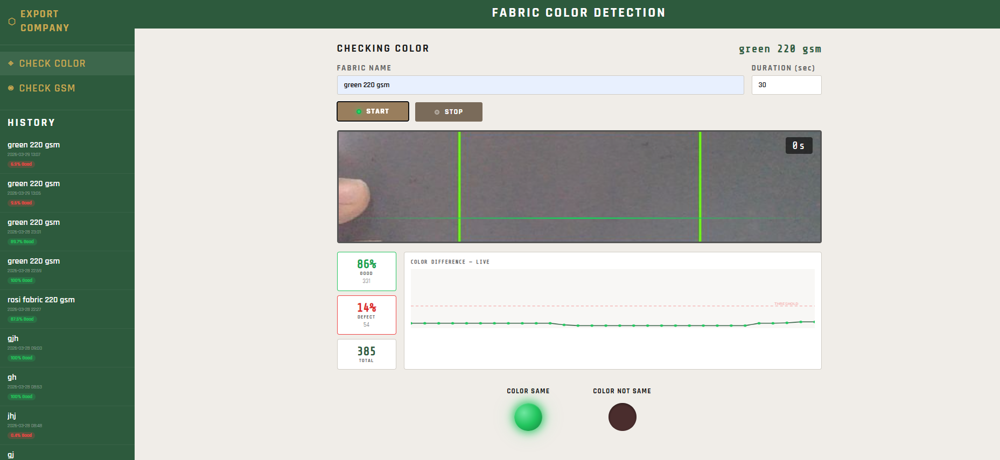

Academic Work
Title: Adoption of IoT Enabled Quality Monitoring System in a Smart Factory
Field: Artificial Intelligence & IoT-based Intelligent Systems
Institution: Multimedia University, Malaysia
This research develops an IoT-based quality monitoring system for smart textile factories, focusing on detecting fabric color variation.
Traditional manual inspection methods are inefficient and prone to human error, leading to inconsistent product quality.
The proposed system integrates image processing and machine learning to automatically detect and analyze color deviations in real time.
The results show improved accuracy, reduced defects, and enhanced efficiency in quality control processes.
This research has been accepted and successfully presented at the International Conference on Technology, Innovation & Management (ICTIM 2026).
Title: Low-Cost Real-Time Fabric Color variation Detection Using Computer Vision
Field: Artificial Intelligence & IoT-based Intelligent Systems
Institution: Multimedia University, Malaysia
This system is the practical implementation of the MSc research on IoT-based quality monitoring. A low-cost, real-time fabric color inspection tool built using a standard camera and computer vision — no specialized hardware required. The system captures fabric color during the dyeing process, analyzes color deviation using Delta E (CIE Lab) color space, and instantly detects inconsistencies across the fabric surface. It provides live visual feedback through LED indicators, a real-time color difference graph, automated test reports with pass/fail verdict, and full inspection history — making industrial-level quality control accessible for small and mid-scale textile factories. The system includes automatic ambient light detection, ensuring color analysis only begins when lighting conditions meet the required threshold for accurate results. Developed as a direct implementation of the MSc thesis, bridging theoretical IoT research with a working real-world system — the dashboard shown below demonstrates the live detection interface in action.

Academic Background
Multimedi University, Malaysia
CompletedSonargaon University, Bangladesh
Completed